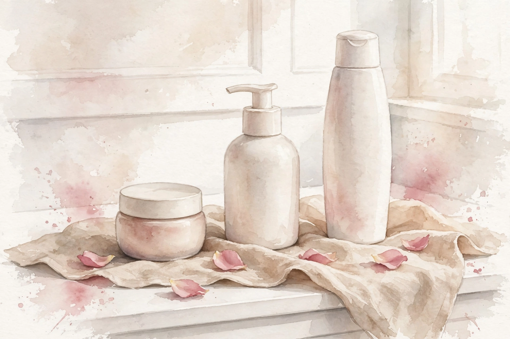
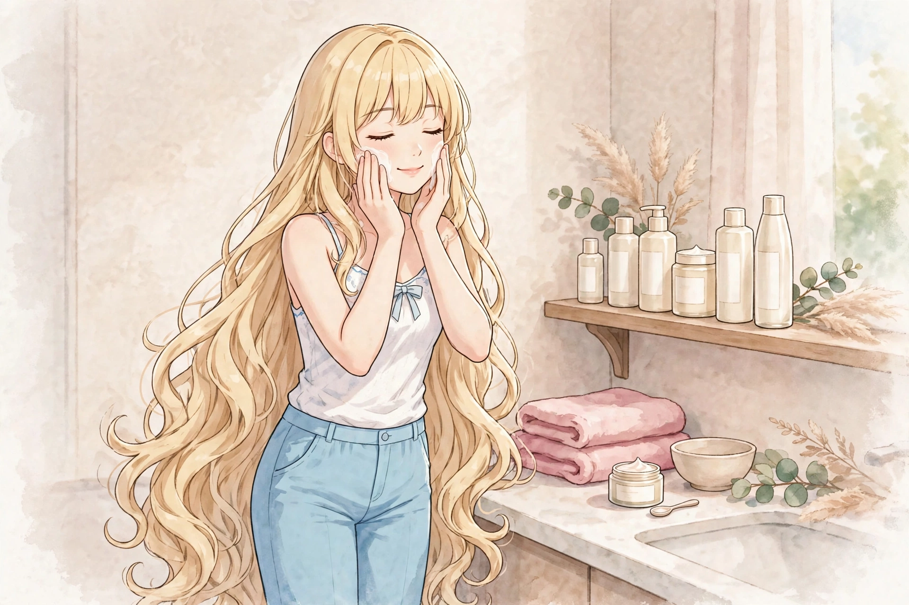

トップ ＞ スキンケア ＞ オールインワンの重ね付けの考え方
オールインワンの重ね付けの考え方

オールインワンは、化粧水からクリームまでの役割を1品にまとめたタイプのアイテムです。「これ1本で済む」のが魅力ですが、施術のお客様からは「物足りない場所がある」「重ねて使ってもいいのか」という声も聞きます。この記事では、特定の商品の話ではなく、重ね付けの考え方そのものを整理します。
重ねるのは「全部」ではなく「場所」
重ね付けの基本は、顔全体にもう一度塗ることではなく、足りないと感じる場所にだけ足すことです。頬の外側、目元、口元など、場所によって感触は違います。私はまずオールインワンを顔全体に通常の量で伸ばし、触って確認してから、必要な場所にだけ少量を重ねます。全体を重ねると量が過剰になりやすく、ベタつきの原因にもなります。
触って確かめるときの目安は、指が滑る感触と、手のひらを当てたときの付き方です。施術でも、塗布量の判断は目ではなく手の感触で行います。
順番は「軽いものから」が基本
化粧水や美容液と組み合わせる場合は、テクスチャーの軽いものから順に重ねるのが基本です。水分の多いもの、さらっとしたものを先に、油分の多いもの、こっくりしたものを後に。オールインワンはその中間に位置づけられることが多いので、「化粧水の後、クリームの前」という置き方が組み立てやすいと感じています。
ただし、商品ごとに推奨の順番が案内されている場合は、そちらが優先です。容器や公式の使い方のページに「この順番で」と書かれていれば、それに従うのが確実です。
朝と夜で組み立てを変える
朝は身支度の時間に限りがあるので、オールインワン1品で済ませる日があっても構いません。夜は時間に余裕がある分、部位ごとに重ね付けをしたり、手順をゆっくり進めたりできます。「朝は1品、夜は重ねる」というように、時間帯で組み立てを変えるのは、無理なく続けるための現実的な工夫です。
大切なのは、毎日まったく同じ手順にこだわらないことです。その日の肌の感触と、使える時間に合わせて手順を調整する。その柔軟さが、結果的にケアを長く続けることにつながります。
重ねる量の感覚は、その日の気温や湿度でも変わります。汗ばむ日は薄く、乾燥する日は少し多めに。毎日決まった量を機械的に塗るのではなく、朝の身支度のときに頬へ触れて、その日の感触で決めるのが私のやり方です。触って確かめる習慣があると、「今日は重ねる日」「今日は1品で足りる日」の判断が自然にできるようになります。重ね付けは特別な技術ではなく、日々の観察の積み重ねなのです。

セラフィナ「重ね付けは、足りない場所にだけ足すもの。全部を重ねなくていいんだね」